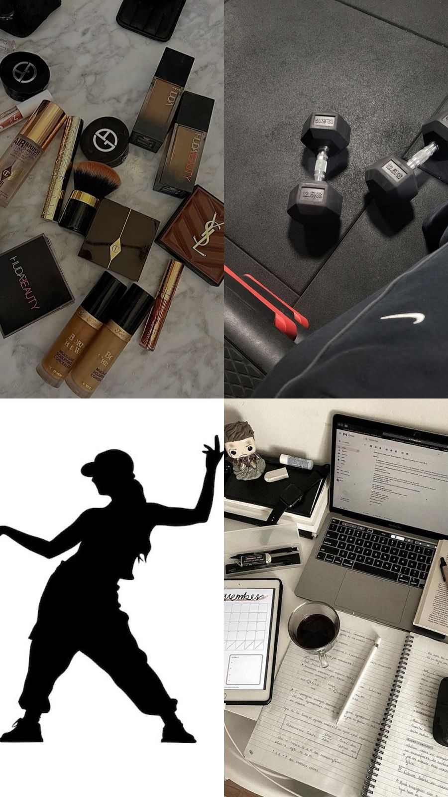

My First Blog Post
September 25, 2025 by Kayla Daley
Web development has been exciting to learn. Yes, it can be overwhelming at times, but I've learned how to structure a webpage using HTML and style it with CSS. The more I practiced, the more I got the hang of it. It even helped me to create a webpage for my business.
I created my first one-page blog site. I was very proud of it and I look forward to improving my skills and creativity in future projects.
Another Post
September 24, 2025 by Kayla Daley

This week, I explored more advanced CSS concepts, such as Flexbox and Grid. These tools make it much easier to control the layout of a webpage compared to using only basic HTML tags. I especially enjoyed experimenting with Grid to align my header, main content, and sidebar neatly.
One challenge I faced was getting images to wrap nicely with text. After some trial and error, I finally figured out how to float images properly. Small wins like this remind me that practice and patience are key to becoming a better web developer.